Urheilu II: REST API, MySql ja käyttöliittymä Reactilla.
Tehtävä 7
ePortfolio: kurssin aikana tehdyt tehtävät.
Puupoltto- ja maalaustöitä
Asetelma hiilellä
Aluksi harjoittelimme Croques piirtämistä toisistamme. Käytin sen tekemiseen hiiltä ja ruskoliitua.
Seuraavaksi tehtävänämme oli tehdä asetelma, josta sitten piirrettäisiin hiilellä.
Tässä testasin eri välineitä ja päätin millä välineellä haluan tehdä työn.
Valitsin Ruskoliidun ja lähdin piirtämään asetelmaa. Paperi oli isompi kuin A3.
Tässä on valms työ ja olen lopputulokseen tyytyväinen.
Unityö
Tarkoituksena oli tehdä uneen liittyvä surrealismi piirros Derventi pastelliväreillä.
Aloitin piirtämällä kevyesti ääriviivoja ja sitten värittämällä Pariisin paperille.
Lisäilin värejä ja muotoja. Paperi taisi olla A3 tai pienempi.
Idean työhöni sain omasta unesta ja sitten lisäilin sinne asioita, joita tuli mieleen työtä tehdessä.
Sain tehtyä taustan ja se alkaa näyttää hyvältä.
Lopuksi väritin planeetat ja sitten se oli valmis. Olen tyytyväinen lopputulokseen.
Värityöt
Tässä tehtiin eläinväriympyrä vesiväreillä. Aloitin hahmottelemalla ketun paperiin ja sitten piirsin viivat.
Kun viivat oli piirretty aloitin laittamaan värejä. Ketun selkäpuolella värit oli taitettu valkoisella ja mahapuolella mustalla.
Etujaloista tehtiin ruskeita ja takajaloista harmaita. Lopuksi vielä tein pieniä yksityiskohtia ja sitten se oli valmis.
Tässä testasin itten väririnnastusta akvarelleilla vesiväripaperiin. Vesiväripaperi kasteltiin molemmilta puolilta litimäräksi 20 minuutin ajan ja sitten se oli valmis käytettäväksi.
Tässä valmistyö ittenin väririnnastuksesta. Ihan hyvä tuli, mutta alussa paperi oli tosi märkä ja siksi keltainen väri levisi. Loppua kohden paperi ei ollut enää kovinkaan märkä ja väri ei levinnyt.
Tutkin värijuttuja ja tein testejä leikkelemällä väripapereja. Oli ihan mielenkiintoista ja tarkoituksena oli parantaa värisilmää.
Lisää värisilmään liittyviä juttuja.
Impressionismin ja realismin yhdistelmä
akryylimaalaus
Tästä omasta kuvasta otan mallia.
Testasin vesiväreillä tehdä.
Tässä testasin akryylimaaleja ja erilaisia tekniikoita. Tyylisuunnaksi valitsin Impressionismin maisemasta, koska se näytti minusta kivalta ja kiinnosti minua.
Tein itse pohjan kiilapuista, johon kiinnitin pellavakankaan niiteillä. Koko oli 55cm ja 65cm. Tämän jälkeen pohjaan laitettiin liimavesi seos, jonka jälkeen pohja kessottiin moneen kertaan ohuina kerroksina.
Kun pohja oli kuivunut pääsin maalaamaan akryyleilla. Aloitin maalaamalla taivaan ja veden tummat kohdat.
Tässä lisäilin värejä veteen, kuten väriä, valokohtia ja saaret. Taivaaseen lisäsin lisää pilviä ja väriä.
Nyt lisäsäsin pilviin ja taivaalle tummempaa väriä sekä lisäsin veteen sinistä väriä.
Tässä vaalensin vähän pilviä ja lisäsin linnut.
Tehtävä 4b
Käyttöliittymä edellisen tehtävän REST API:lle.
Tehtävänä oli luoda käyttöliittymä edellisen tehtävän
sanakirjan REST API:lle, josta voi lisätä ja hakea sanoja.
Käyttöliittymässä käytettiin jQueryä ja HTML:ää.
Käyttöliittymässä
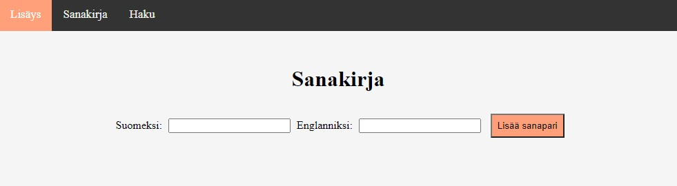
Ensiksi otettiin käyttön jQuery ja tehtiin POST-pyyntö
osoitteeseen http://localhost:3000/sanakirja/. Tämä siis
etusivulla, jossa pystyy lisäämään sanaparin sanakirjaan.
Etusivu koostoi navigointipalkista, otsikosta, kahdesta
tekstikentästä johon sanat lisättiin ja lisää sanapari
-painikkeesta.
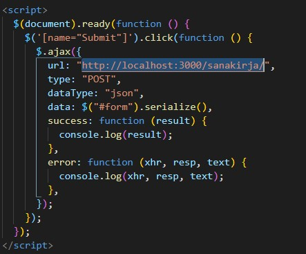
Seuraavaksi tein sanakirja.html -sivun, johon tuli näkyviin
koko sanakirja.
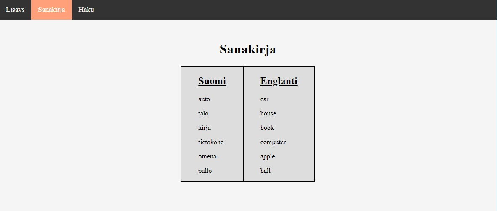
sanakirja.html:ssä oli oikeastaan vain tuo GET-kysely.
Kyselyn sisällä tein saadulle datalle silmukan jossa sanat
tulostuivat omiin sarakkeisiinsa.
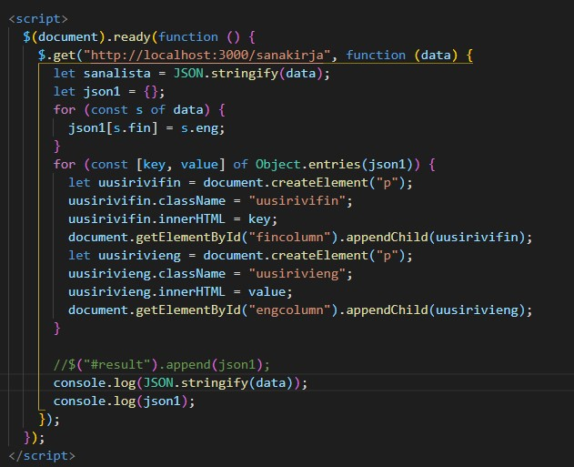
Viimeisellä sivulla haku.html oli sanan haku sanakirjasta.
Tekstikenttään syötettin suomenkielinen sana ja alle
tulostui sanapari, jossa oli suomenkielinen ja
englanninkielinen sana, jos sana löyty sanakirjasta.
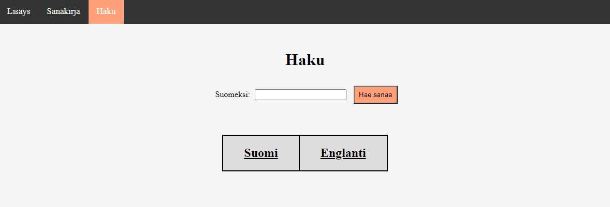
Tehtävä onnistui hyvin ja kaikki toiminnot toimivat.
Muotoiluun voisi kiinnittää enemmän huomioita jos saisin
uudelleen tehdä. Opin paljon REST API:n toiminnasta ja sitä
tuli kerrattua sen verta monesti että uskon sen jääneen
mieleen.
Tehtävänä oli luoda Node.js sovellus, joka käyttää
express.js:ää ja MySql:ää. Tehtävä tehtiin pohjakoodin
pohjalta, joten se oli helppo tehdä: poistettiin käytännössä
vain kommentteja pois pohjakoodista. Tehtävässä piti luoda
tietokanta ja siihen taulu "henkilot", taulun attribuuteiksi
tuli id, nimi, puhelin. Henkilot -tauluun lisättiin muutamia
testihenkilöitä ja siihen luotiin käyttäjä jolle annettiin
oikeudet käyttää taulua.
Tietokantaan otettiin sitten yhteys index.js eli serverin
puolella:
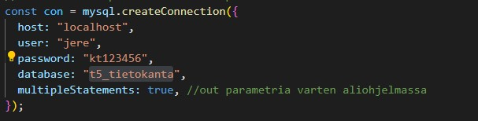
Seuraavaksi luotiin GET-metodit, joissa käytettiin luotua
con-yhteyttä tietokantaan, jotta saatiin haettua kaikki
henkilöt henkilot-taulusta. con.query():n sisälle tuli
SQL-lauseke, jolla tietoa haetaan taulusta:
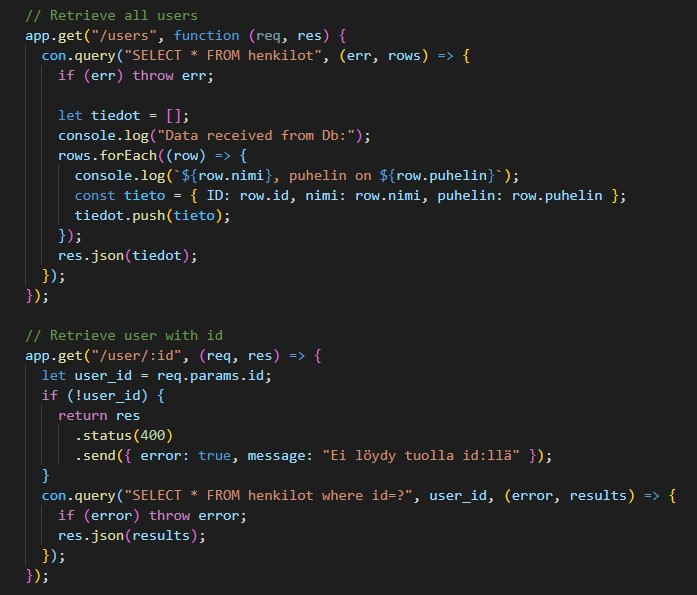
Henkilön lisäämiselle tietokantaan ja henkilön muokkaukselle
oli omat metodinsa POST ja PUT:
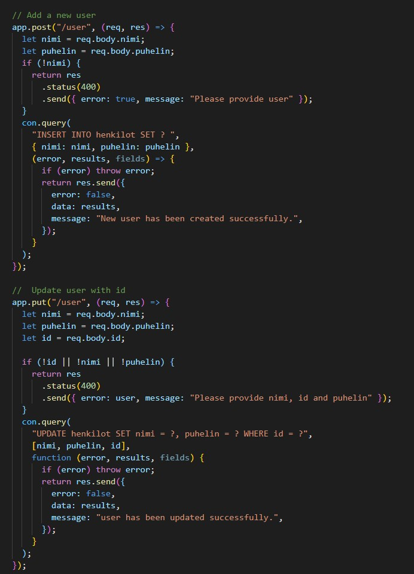
Viimeiseksi luotiin vielä metodi henkilön poistamiselle
tietokannasta:
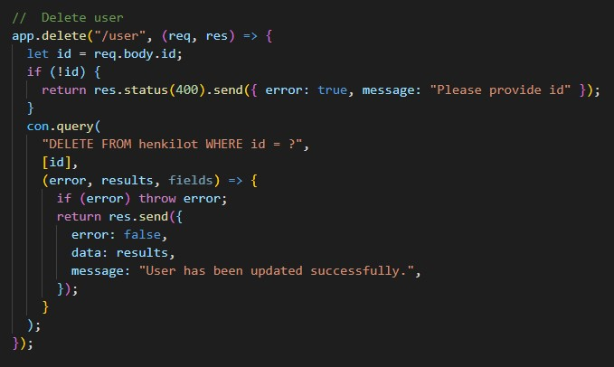
Opin tekemään REST-rajapinnan käyttäen express.js:ää ja
MySql-tietokantaa. Tämä oli erittäin hyödyllinen tehtävä ja
tulee käyttöön jatkossa. Perusrakenne jäi hyvin muistiin.
Tehtävä onnistui hyvin, enkä edes joutuisi tekemään mitään
erilailla vaikka saisinkin.
Urheilu II: REST API, MySql ja käyttöliittymä Reactilla.
Tehtävänä oli toteuttaa JavaScript-pavelinsovellus, joka
tarjoaa REST-rajapinnan kautta tietoja urheilijoista. Ensin
täytyy suunnitella ja toteuttaa express.js -kirjaston avulla
REST-rajapinta, ja toteuttaa sinne haku-, lisäys-,poisto- ja
päivytystoiminnot MariaDB-tietokantaan. Tietokannassa tuli
olla etunimi, sukunimi, kutsumanimi, paino, kuvalinkki, laji
ja saavutukset. Lisäki piti toteuttaa Reactilla
käyttöliittymä, josta urheilijoiden tietoja voi lukea,
päivittää, lisätä ja poistaa käyttäen ensiksi tehtyä
REST-rajapintaa. Käyttöliittymässä piti käyttää Bootstrapia
vapaalla tyylillä.
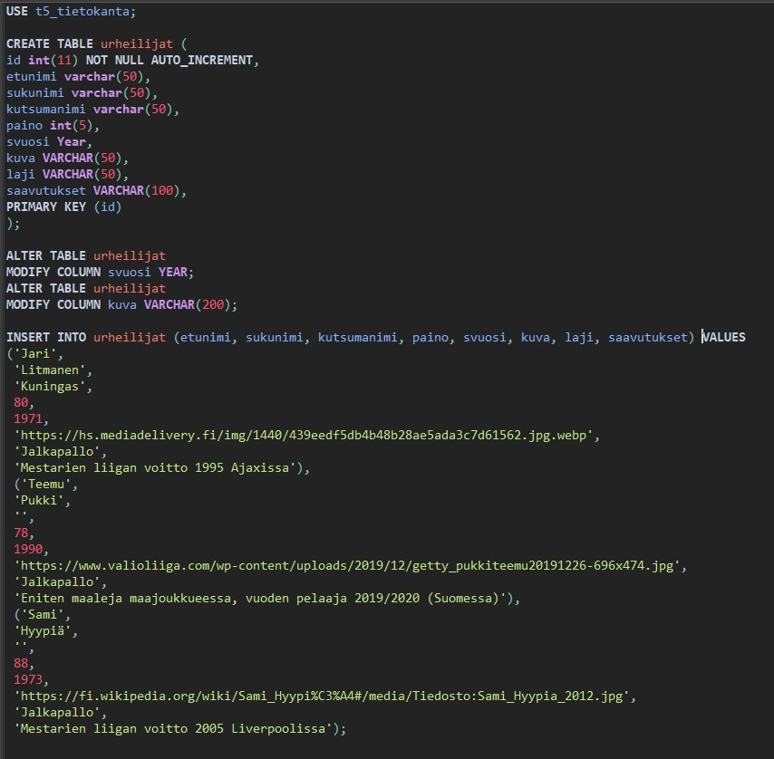
Ensiksi luotiin REST-rajapinta esimerkkiharjoitusten
mukaisesti. MariaDB:ssä tietokanta ja sinne taulu nimeltä
urheilijat. Tauluun tarvittavat attribuutit ja muutama
esimerkkiurheilija valmiiksi. Sitten vielä luodaan käyttäjä
ja annetaan sille käyttöoikeudet. Serverin puolella otettiin
käyttöön mysql, CORS ja express ja muodostettiin yhteys
tietokantaan. Loin tarvittavat metodit (GET, POST, PUT ja
DELETE) ja kun kaikki vaikutti toimivan kuten piti niin
siirryin tekemään käyttöliittymää Reactin puolelle.
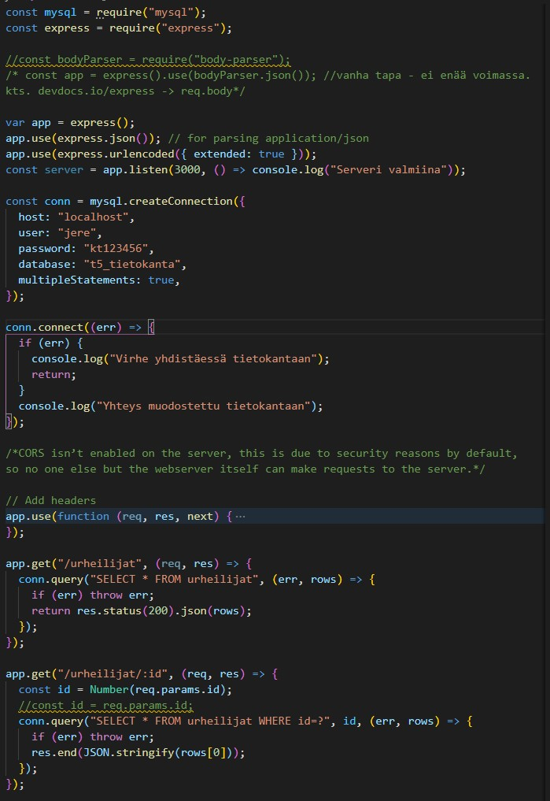
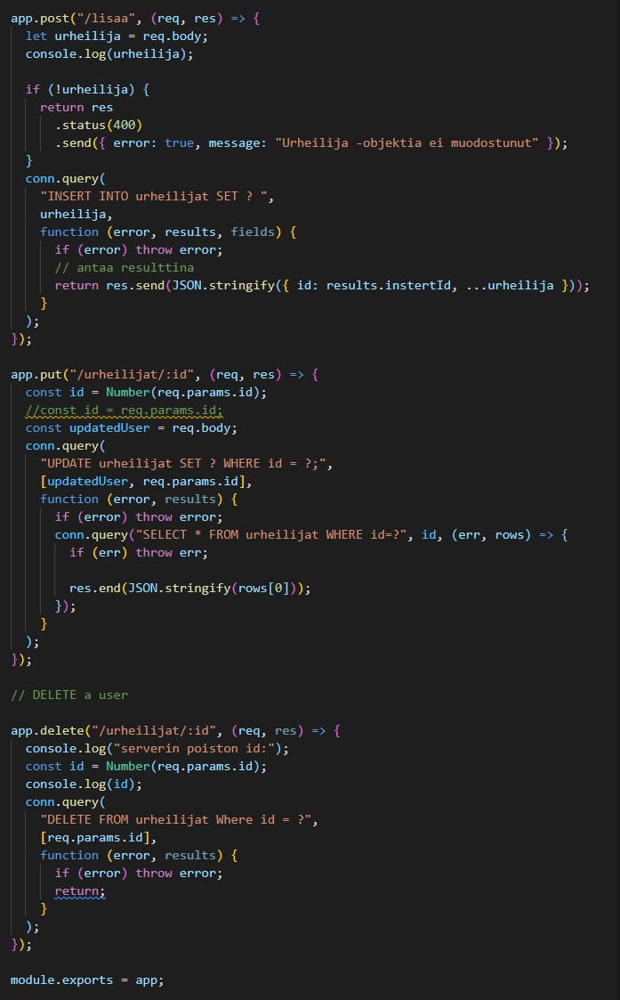
Käyttöliittymän totetuksessa käytin rankasti apuna edellistä
harjoitusta "Puhelinluettelo". Ensimmäiseksi lähdin luomaan
itse Contextia: tein UrheilijatContext.js jossa määritettiin
context. GlobalState.js tiedostoon tuli pyynnöt ja
vastaukset eri REST-rajapinnan metodeille ja niiden
vastaukset laitettiin useReducerin avulla haluttuun muotoon,
useContextin avulla saatiin data käyttöön kaikkialla.
Sitten tein Urheilijatiedot.js ja Urheilijatieto.js
tiedostot. Ensimmäisessä otettiin käyttöön UrheilijatContext
useContext:lla. Käytin useEffectiä, jotta sain contextin
avulla käytettyä getUrheilijatiedot() kyselyä
REST-rajapintaan ja datan näin tuohon
UrheilijatiedotContextiin. returniin tulo vain otsikko
"Urheilijatiedot" ja alle mappasin kaikkien urheilijoiden
tiedot omiin komponentteihinsa.
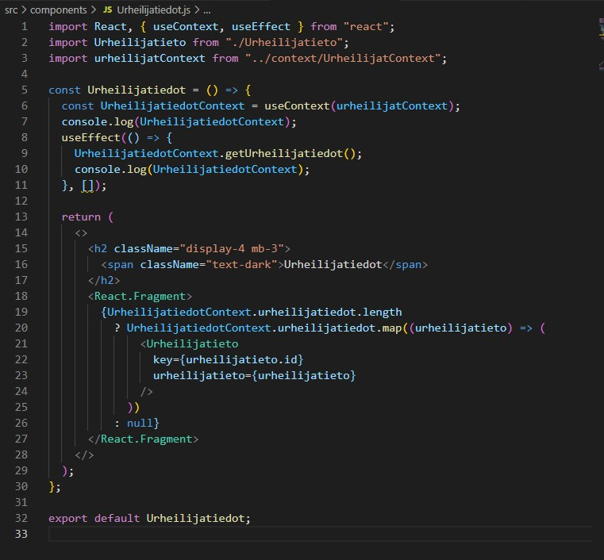
Seuraavaksi oli vuorossa Urheilijatieto.js jossa luotiin
yksittäiset urheilijoiden korttikomponentit. Taas otettiin
käyttöön useContext, josta saatiin käyttöön REST-rajapinnan
toiminnot. Tätä tarvittiin etenkin "poista"-nappia
painaessa. Nyt yksittäisen urheilijan tiedot tulevat siis
propseina Urheilijatiedot.js:stä, ja tässä tiedostossa ne
laitetaan omaan olio-muuttujaansa, jotta niitä on helpompi
käyttää returnissa. UseState käytettiin silloin, kun
haluttiin "tiedot"-painikkeella näkyviin urheilijan tiedot:
aluksi arvo on false ja tiedot ei näy, mutta onShowClick
(joka on kytketty tiedot painikkeeseen) muuttaa staten
Trueksi ja tiedot tulevat näkyviin. Itse naytaUrheilijatieto
-muuttuja on suoraan returnissa. Urheilijan tiedot näyttävä
kortti on Bootstrapin kortti, jota muokkasin sopivaksi niin,
että kuva olisi vasemmalla, painikkeet keskellä ja
lisätiedot aukeaisivat oikeaan laitaan ilman että kortin
koko hirvestä muuttuisi tietoja näyttäessä.
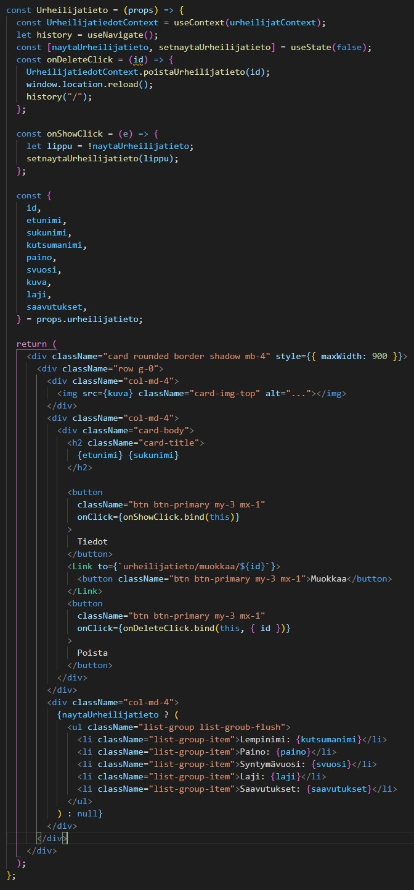
Sitten tein LisaaUrheilija.js:n. Täälläkin otetaan ekana
käyttöön useNavigate, useContext ja useState. UseNavigatella
voidaan helposti siirtyä takaisin kotivalikkoon kun tehdään
jotakin muutoksia. Jokaiselle tarvittavalle urheilijan
kentälle luodaan oma useStatensa ja handleSubmitilla otetaan
kaikki tiedot muuttujaan ja lähetetään contextin avulla
tietokantaan. returnissa on pitkä lomake, jossa kentät
jokaiselle urheilijan muuttujalle. Kenttien value muuttuu
onChangella niin, että kentän arvon muuttuessa muutetaan
esim. etunimen Statea ja lähetä-painikkeella kaikki arvot
lähetetään backendiin ja sieltä tietokantaan.
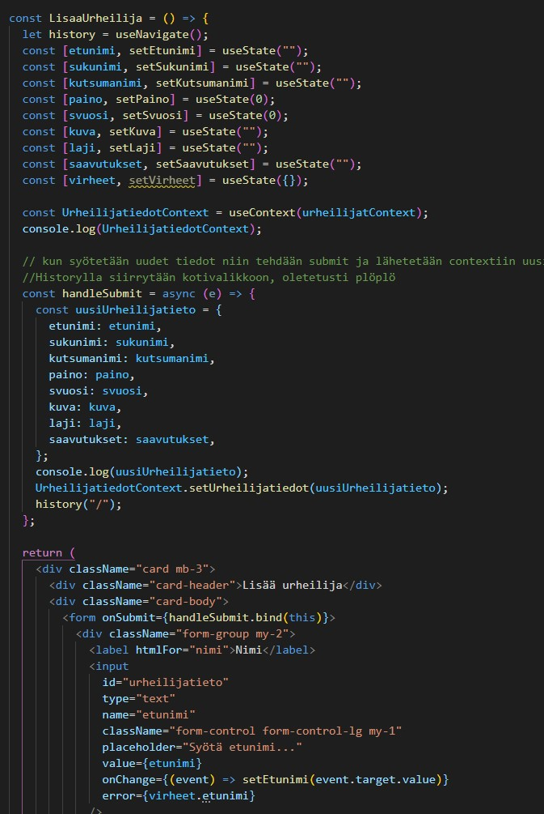
MuokkaaUrheilutieto.js:n pohjaidea on sama kuin edellisessä
LisaaUrheilija.js: ensin luodaan statet jokaiselle
urheilijan kentälle. sitten käytetään useEffectiä, jossa
alustetaan komponentti ensimmäistä kertaa ladattaessa.
Tuolla mountedilla pidetään huolta siitä, että sivu ei
päivity kokoajan tms. UseParams():lla saadaan id suoraan
URL:sta, ja sitä voidaan käyttää urheilijan tietojen
hakemiseen ja lomakkeen tietojen alustamiseen. HandleSubmit
ja onChange ovat samat kuin lisääUrheilija.js:ssä, ja
lomakekin on sama kuin siellä. HandleSubmitissa luodaan olio
paivitettyUrheilijatieto, jonka kentät muuttuvat sitä mukaa
kun niitä muokkaa lomakkeessa. Lähettäessä tämä olio
lähetetään tietokantaan päin contextin avulla:
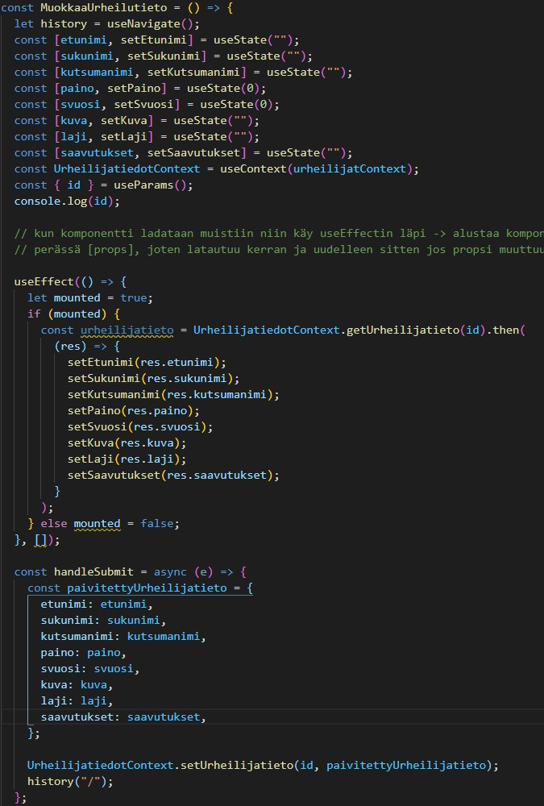
App.js:ssä otettiin sitten käyttöön kaikki edelläluodut
komponentit (+Ylatunniste ja Tietoa) sekä Router, jotta
saatiin reititettyä sivut oikein:
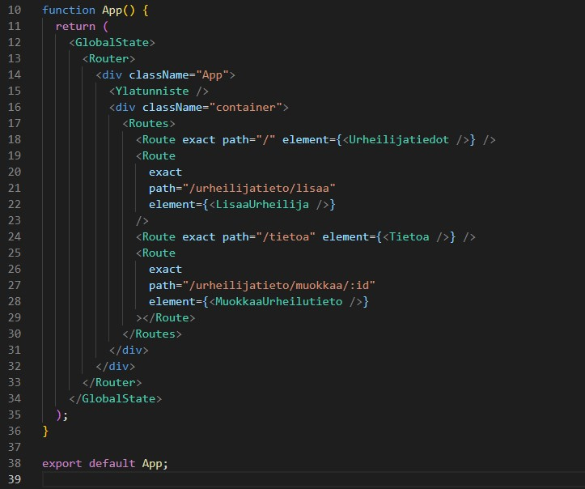
Lopullinen ohjelma:
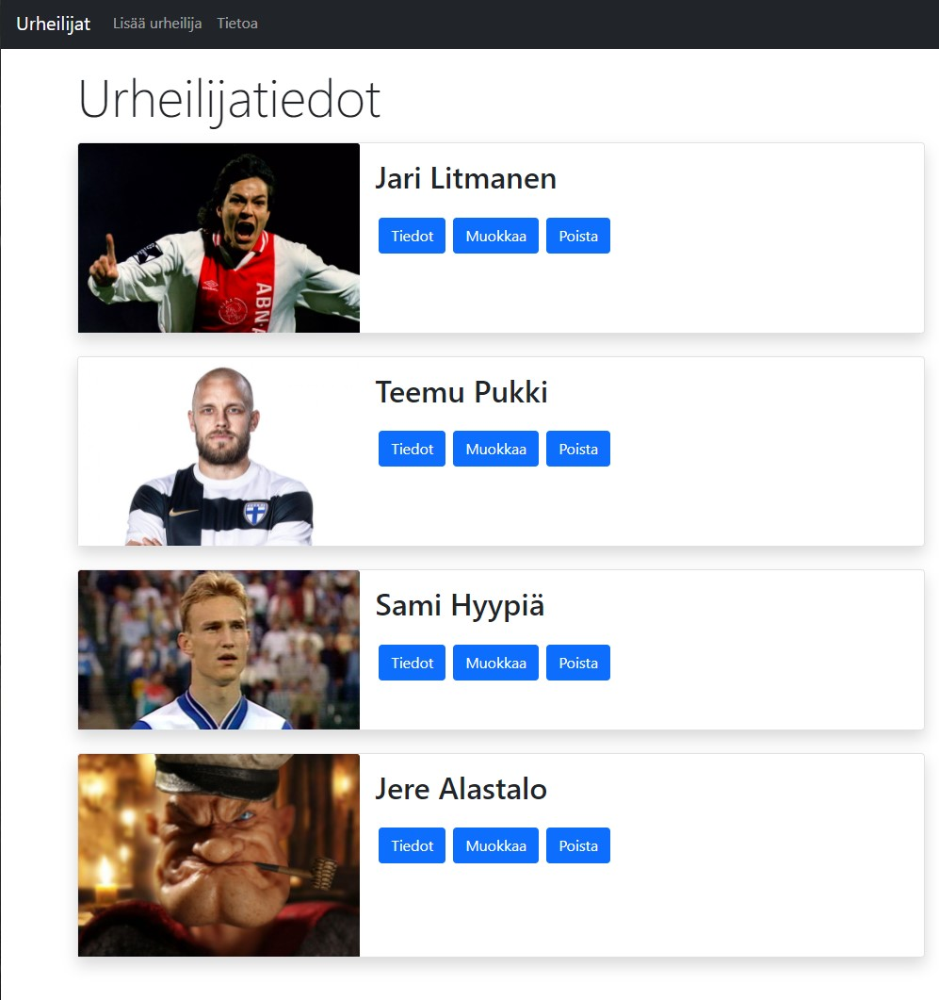
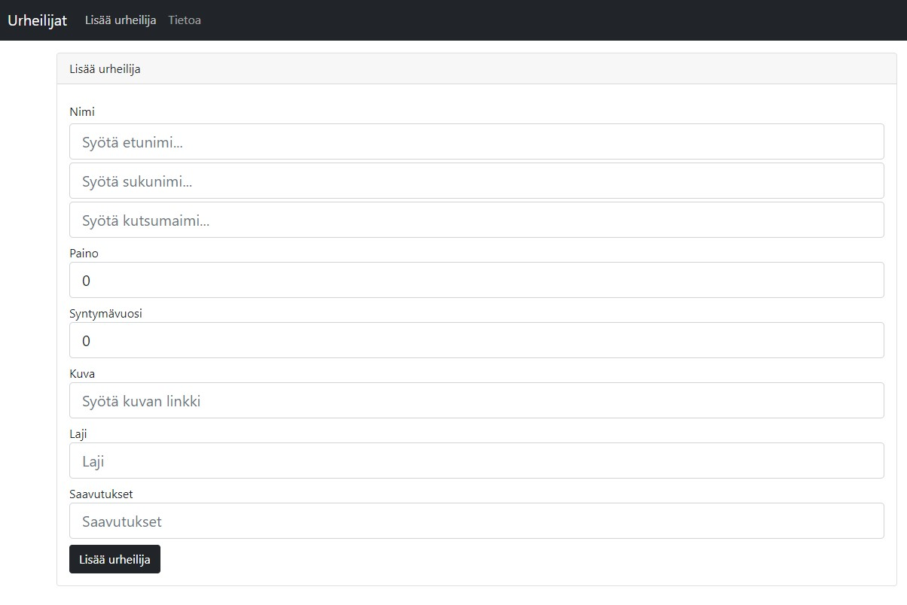
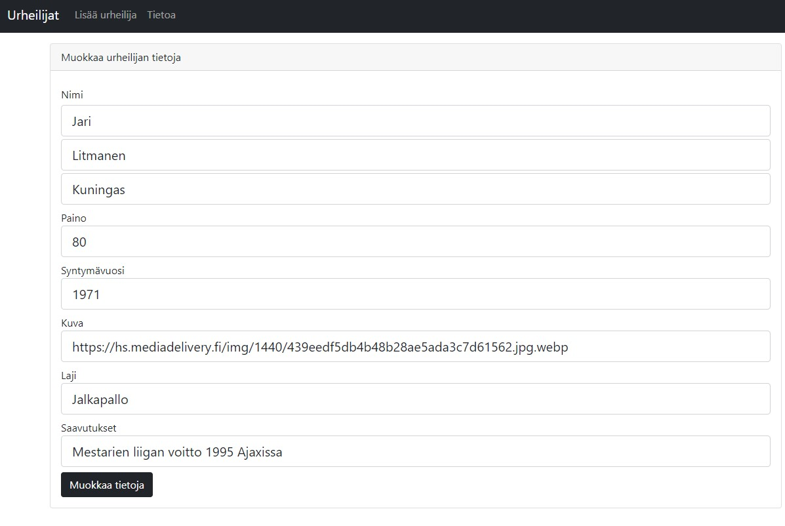
Mielestäni tehtävä onnistui mainiosti. Sain kaikki toiminnot
toimimaan ja ongelmat ratkottua. Mielestäni ohjelmasta tuli
tyylikäs ja toimiva. Sitä oli erittäin mukavaa tehdä mutta
ilman edellistä harjoitustyötä tämä tuskin olisi onnistunut
sillä kokonaisuus oli mielestäni vielä hankala omaksua
kerrasta. Sitä onkin hyvä vielä kertailla ja kokeilla eri
projekteissa. En tekisi mitään toisin vaikka aina voisi
enemmän leikkiä muotoilullisilla kikoilla ja kokeilla
erilaisia kombinaatioita.
Tein ePortfolion valmiisen bootstrap template -pohjaan, jota
muokkasin mieleisekseni. Tehtävä oli suoraviivainen,
enimmäkseen vain kuvien asettelua ja tekstin lisäämistä.
Silti tehtävä oli erittäin mukava ja vaihteeksi tällaista
kevyttä tekemistä, ei turhaa stressiä näin joulun alla.
Mielelläni tekisi lisää tälläista. Voisin jatkossa käyttää
Bootstrapia pohjana projekteille, koska oli niin nopea ottaa
käyttöön ja muokata, eikä tarvinnut murehtia
responsiivisyydestä, eli miltä ohjelma näyttää kännykällä ja
tabletilla.
Muokkasin pohjaa niin paljon kuin mahdollista, että
Bootstrap tulisi tutuksi. Muokkasin navigointipalkin,
painikkeet, headerin kuvat ja portfolion kuvakkeet, poistin
kaikki turhat osiot ja jäljelle jääneistä muokkasin css:t
halutunlaisiksi. Lisäsin painikkeita eri tehtävien välillä
kulkemiseen ja testasin kaiken toiminnan. Lopputulos
miellyttää omaa silmää ja toiminta näyttää sujuvalta.
Tämän tehtävän aikana tuli hyvin kerrattua sitä, mitä tuli
tehtyä ja opittua kurssin aikana. Jokaisen tehtävän joutui
avaamaan uusiksi ja katsomaan mitä sitä olikaan tullut
palautettua. Hyvä tapa oppia ja kerrata. Tämä tehtävä opetti
käyttämään bootstrap pohjia ja lukemaan sekä muokkaamaan
html-muotoista koodia mieleisekseen. Tulee käyttöön
tulevaisuudessa, varmasti.


 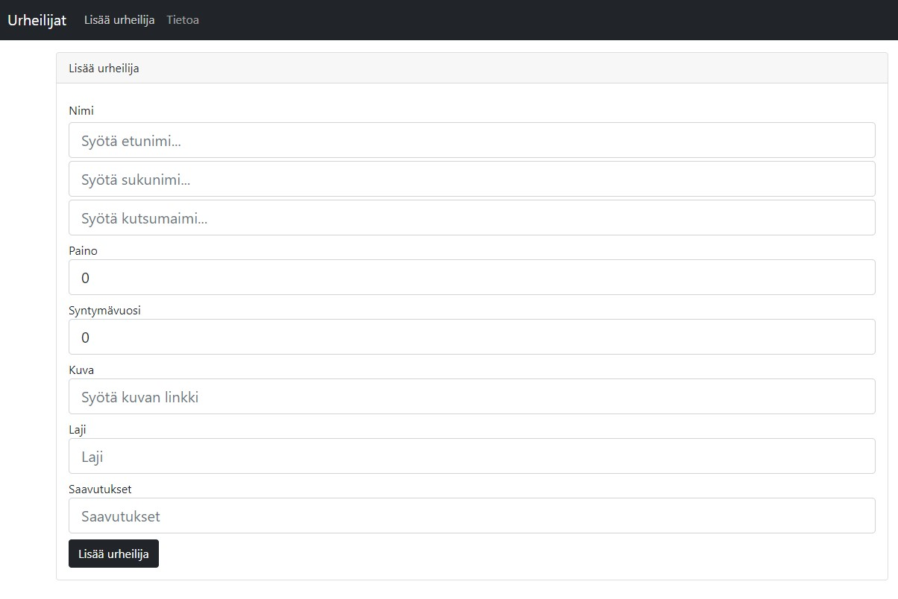
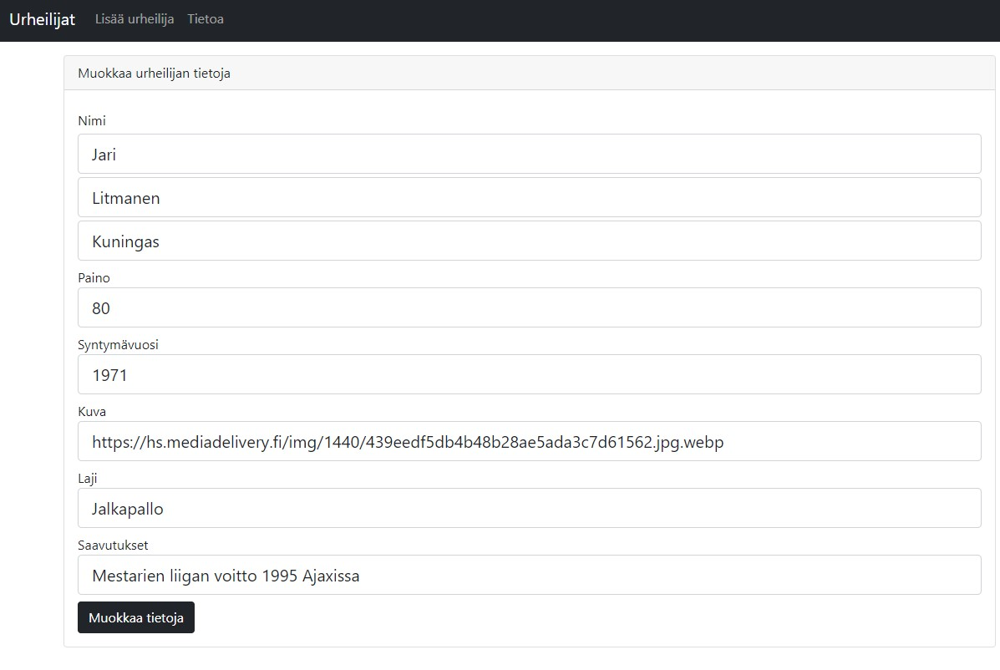
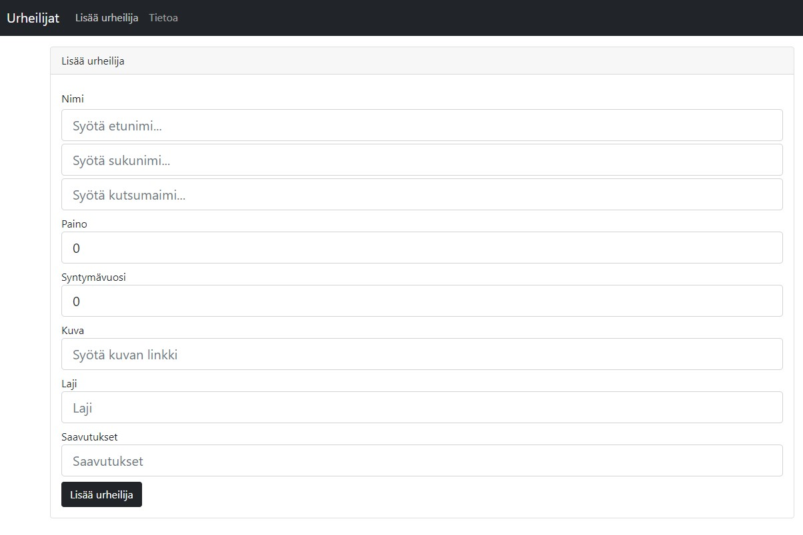
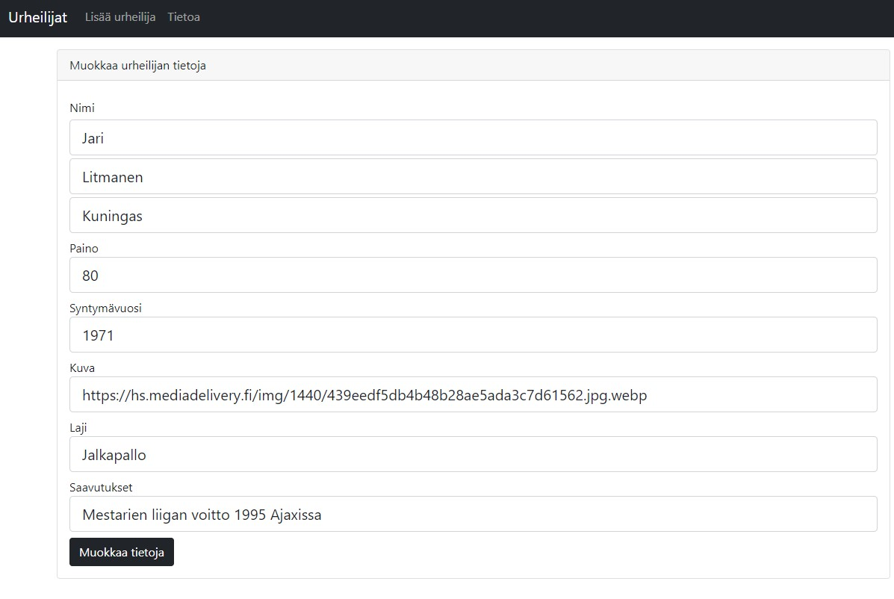